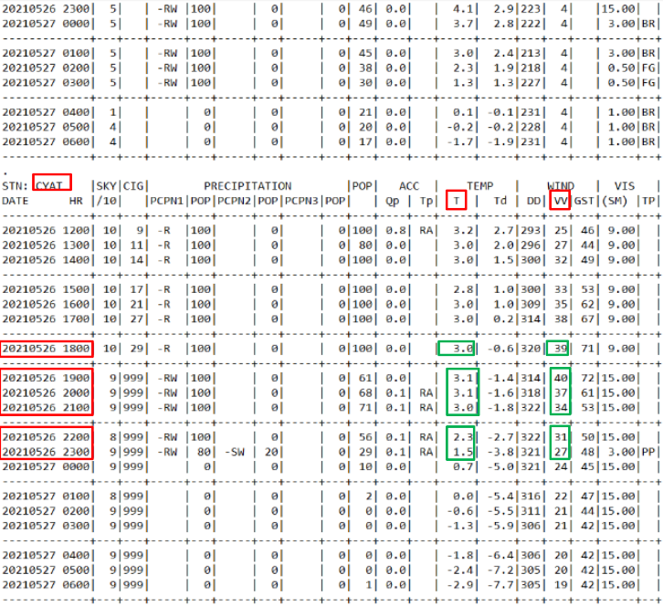
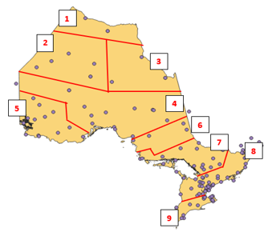
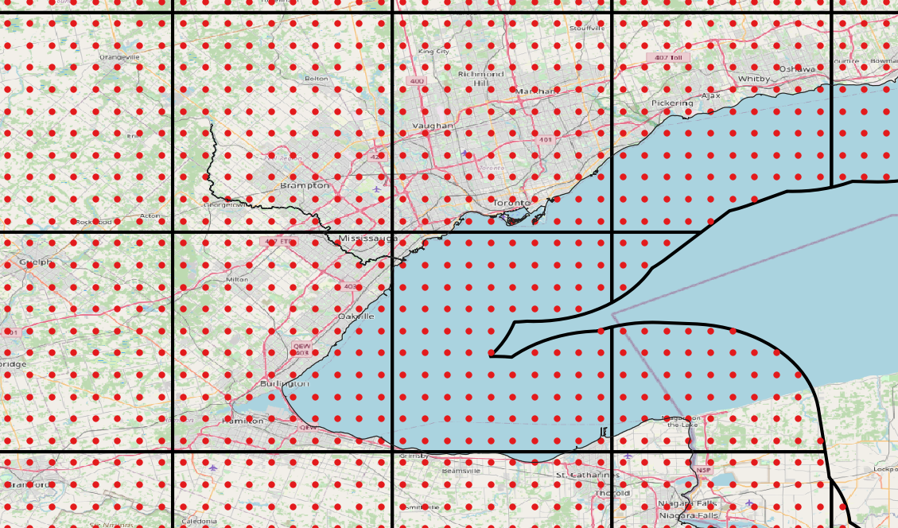

132 weather stations across Ontario and within a 50km distance from the borders of Ontario were chosen as inputs for raster interpolation. The weather stations within 50km outside of the Ontario border were included in the study area to improve interpolation results near the edges of Ontario near Manitoba and Quebec.
The script downloads hourly weather station data from this Government of Canada website using the python URLLIB module. The script unzips the downloaded file using 7Zip, and converts the file into a text file. The file is then parsed for the current and 1-5 hour forecast for temperature and wind speed in the corresponding weather statios found in our study area. These parsed values are added to a csv file for further processing, and a PostgreSQL table for archiving.
PyQGIS is a framework that allows you to run QGIS processes in python. To run QGIS processes in python, we needed to set our python interpreter to the python-qgis.bat interpreter that is packaged with the QGIS/OSGEO4W installation. The same python script used in the ETL procedures above automates the interpolation process using PyQGIS by first converting the CSV file into a point layers and adding new columns to that layer, using the field calculator, to store the temperature and wind as numerical values (since they are string values upon layer creation). The script then performs a series of IDW interpolations for each hour, and for both temperature and wind over the nine different regions (see below) of our study area.
We split the province of Ontario into nine sub-regions and run our IDW interpolation model for all nine different sub-regions. This was done to improve the accuracy of the IDW interpolation model by limiting the interpolation model to weather stations within a specific sub-region rather than interpolating across all of Ontario which causes complications with IDW interpolation.
All QGIS IDW interpolations are done in python, and the nine different regions (for each hour) are merged together using the GDAL merge raster tool in python. Using the raster images by themselves to relate data to our web map was not a viable option, so we instead sampled the raster values into a pre-made vector point layer. This pre-made vector layer has points seperated by 0.04 degrees, and the points are grouped into square tiles (100 points per tile, typically) spaced out horizontally and vertically by 0.4 degrees. Each vector point has a column with the value of its corresponding square tile extents (for example a grid with an extent of -76.4, 44.4, -76, 44 (left, top, right, bottom) would a column value of G7644447644). Once all of the generated rasters are sampled over each other into these vector points, that sampled vector layer will split, according to the name of that extent name column, into GeoJSON files. There are 994 GeoJSON files (994 is the number of square tiles covering Ontario) created and they hold all of the weather information and forecasted information from that hour. These GeoJSON files are named according to their extents and are stored on the server.
The Ontario weather web application displays weather information for all of Ontario. It was designed to retrieve weather information stored on the server and report the current weather according to the selected location. This is done by retrieving the GeoJSON files previously created, using jQuery. jQuery is initiated after a user selects a point on the map. When a user selects a point on the map the latitude and longitude coordinates are recorded and rounded both up and down to the nearest 0.4 degrees to get the corresponding tile extents. These values would then be concatenated to match the naming format of the GeoJSON files. That concatenated file name would then be used in the jQuery request, which will bring in the GeoJSON file. Before the GeoJSON file can be used for its information, a single point must be selected from this file. There are typically 100 points in each of these files, and the point closest to the selected point on the map must be selected to take the data from. This is done using a for loop that iterates through each record in the file and calculates the distance between each point and the selected point, using the Pythagorean theorem. The index number of the closet point is saved, and then used to retrieve the location specific weather data. Once the script knows which point is the closest the script will display the corresponding weather information. This information is the current temperature and wind, and the forecasted temperature and wind values for the next 5 hours.
We chose to use the Leaflet JavaScript mapping library to build our map. Leaflet is open source, eaay to implement, and highly functional. For our base map we used OpenStreetMap data and MapBox (free license) imagery (for its visual appeal). We added location, and geocoding capabilities to our map, as well as live cloud and precipitation tile layers from the OpenWeatherMap API. We also added time values (EST) and unit conversion buttons. The unit conversion buttons were programmed manually to convert back and forth between celcius and fahrenheit, and KM/H to MPH.
Using python for automating tasks turned out to work very well for our purposes. We were able to do all the pre-processing within a python script and set it up tp automatically run every hour. This includes command line prompts (which originally, we were planning to do outside of python with PowerShell). The runtime of our entire python script takes approximately 80-90 seconds to complete, and weather data requests on the website are displayed in a split second.